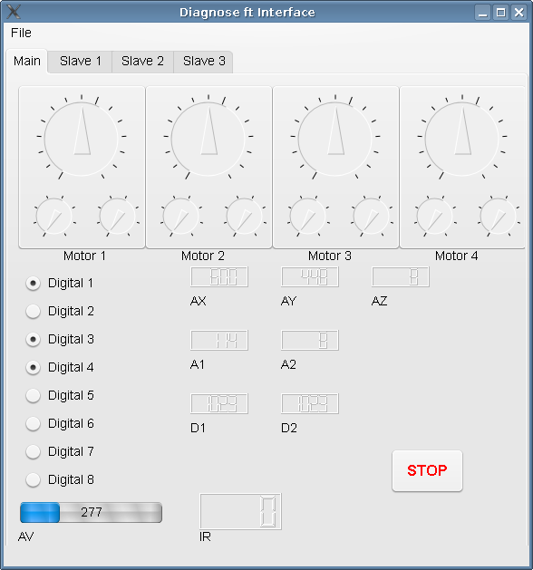

libft Index Page
libft is an Open Source version of the fischertechnik ROBO Interface Library for Unix like systems
The goal is to create a library that is fully compatible with the ftlib by knobloch eletronic.
This library should work on any systems supported by libusb, like Linux, BSD and Mac OS X and is released under the GNU Lesser General Public License (LGPL)
Included is the helper program "ftuploader" which allows you to upload programs to the Robo Interface.
Running ftuploader --help should give you an idea how to use it.
Also included is an Interface Diagnose utility. See section Interface Diagnose
Current Version: 0.4.3
See http://defiant.homedns.org/~erik/ft/libft/files/
Download Latest version: http://defiant.homedns.org/~erik/ft/libft/files/libft-current.tar.gz
- See also:
- libft.c
Type
Type
After installing you should run
to make the library known to your system. Make sure that /etc/ld.so.conf is configured to include /usr/local/li
To install the diagnose utility type
Debian packages are available. Please read http://vontaene.de/apt/README.txt.
You can install them with apt-get install libft0 libft-doc libft-python libft-diag
When running udev you might want to copy the file fischertechnik.rules from the udev folder to /etc/udev/rules.d/ to get the correct permissions.
Udev then needs a reload with
You will now need to replug your device.
Type
- make doc
to create the html API documentation.
A Python interface to this library is available, see the python folder for details.
Type
make python
in the python/ -folder to install the python module. Use pydoc to read its documentation:
- pydoc robointerface in the shell
- help(robointerface) from the python interpreter
You can find it in the folder diag/.
It requires the python module (see above) and PyQT4. You can launch it by running "sh ftdiagnose"

Erik Andresen -
erik@vontaene.de
Please contact me for bugs or any suggestions
Homepage of libft: http://defiant.homedns.org/~erik/ft/libft/
- 0.4.3: - Bug fix: Extension digital inputs at RoboRF
- ftdiagnose: Display connection status
- Added functions: (not in Knobloch lib):
- Python added functions:
- 0.4.2: - Python support to open the interface by serial
- Some Bug fixes
- Added functions: (not in Knobloch lib)
- 0.4.1:
- Added support to change the RF address.
- Added functions: (not in Knobloch lib)
- Added support for functions:
- Some minor Bug fixes
- 0.4:
- Hopefully support for more then one Robo Interface attached to an RF Link.
- Added support for the ft distance sensor
- Added functions:
- Added support for functions:
- Python added functions:
- GetNumFtUsbDevices()
- RoboInterface.GetDeviceTypeString()
- GetD1()
- GetD2()
- Added ft Diagnose utility.
- 0.3:
- added (overwrite) --target option to the ftuploader
- included some documentation
- minor fixes
- enhanced python layer
- support for RF Module
- 0.2.1:
- fixed Analog/Voltage Sensor calculations
- 0.2:
- added udev file
- experimental support for uploading to the interface (usb only)
- included program ftuploader
- add support for functions:
When porting your program from the Knobloch Library for Microsoft Windows operation systems please note the following:
- The name of this library is libft, not ftlib (the Knobloch original) to follow the UNIX naming scheme
- Types like DWORD are replaced with their logical ANSI-C counterparts, like
- DWORD - long int
- LPCSTR - char *
- LPVOID - void *
- BYTE - unsigned char
- USHORT - unsigned short int
- UINT - unsigned int
- UCHAR - unsigned char
- The Windows Notifications stuff will probably never be supported.
- Some return codes might be different, so if something is going wrong, check this manual.